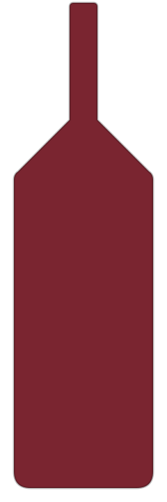

NIET OVER DE PRIJS
Oro Italiano Governo 2023
De Oro Italiano Governo 2023 is een Toscaanse wijn gemaakt in de Governo all'uso-stijl, waarbij wordt nagegist op ingedroogde druiven. Deze techniek wordt in de hedendaagse markt ook als commercieel middel ingezet, waarbij de marketingwaarde soms boven de kwaliteitswaarde wordt geplaatst. Over de producent is weinig bekend. De wijn haalt een Vivino-score van 4,1 op 3.100 beoordelingen, wat erop wijst dat drinkers hem waarderen. Luca Maroni kent de wijn 97-98 punten toe, maar Maroni hanteert een eigen beoordelingsmethode die afwijkt van andere critici en commerciële, vruchtige wijnen structureel hoog scoort.
De brede consumentswaardering op Vivino is een reëel signaal, maar de onderbouwing voor uitzonderlijke kwaliteit blijft dun. De Governo-techniek op zich garandeert geen complexiteit, en het profiel leunt vermoedelijk naar het toegankelijke en fruitgedreven. Wie op zoek is naar meer diepgang of een sterke reputatie bij internationale referentiepunten, vindt die hier niet terug.